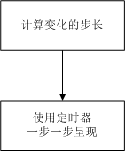
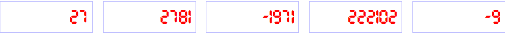

以液晶电子表样式，动态变化的在指定元素内显示数字。
目标关键词：动态变化（定时器），指定元素（DOM元素ID），数字（number）
效果：多个页面元素中，均以动态效果显示不同的数字，可正可负。并动态改变至少一个元素内的数据。
（1） 液晶电子表样式，找一种液晶电子表字体即可，无须使用别的绘制技巧。
（2） 动态变化则通过使用定时器任务来完成，动态显示要确保变化足够的时长，因此，步长需要根据变化量来进行计算，本文默认变化频率为 50 毫秒一次，动态过程 2 秒（即 2000 毫秒），则变化次数为 40 次，因此步长为变化量除以 40 得到。

其余则均为规则约束与控制，如支持多元素隔离，动态变化的结束条件，步长计算的方向与时长控制等。
最后提供的源码会包含字体文件。在css中定义字体名称以便样式引用。
@font-face {
font-family: LEDFont;
src: url("./UnidreamLED.ttf");
}接下来定义显示数字的元素样式，其中便使用到刚定义的字体名称 LEDFont。
.dynanum{
font-family: LEDFont;
font-size: 48px;
color:red;
padding:10px;
margin:10px;
display:inline-block;
width:200px;
text-align:right;
border:1px solid #bbbbff;
}使用者能提供的就是有显示的 DOM元素ID，和要显示的数值，那这里向外提供的接口方法就出来了，形如：function (elementId, number)。
为了支持多元素的简易操作，这里定义DOM元素ID与对象的映射变量。
var DynamicNumber = {};
DynamicNumber.NumberList = {};直接代码说话。嗯，这里说明一下重点。对于实际绘制的对象，接口中以匿名函数的方式创建，在首次涉及到某DOM元素ID时进行创建。如果已经创建，则直接调用 render 方法，调用之前，除了设置新的目标数值，还会清除步长 step，表示需要重新计算步长，当然这些都是封装在接口内部，调用者不需要关心。
对于绘制方法 render，它所完成的是一步变化的绘制，期间进行结束条件的判断，并在 step 为 0 时进行步长的首次计算工作，最后再使用 setTimeout 启动下一步的定时任务。
详细代码及注释如下，欢迎留言交流。
/**
* 在指定的 DOM 元素中动态显示数值
* 作者：triplestudio@sina.com
*
* @param elementId : DOM 元素ID
* @param number : 数值
*/
DynamicNumber.show = function (elementId, number) {
// 1. 已建立过对象直接调用
var dynaNum = this.NumberList[elementId];
if (dynaNum) {
dynaNum.step = 0;
dynaNum.desNumber = number;
dynaNum.render();
return;
}
// 2. 创建动态数字绘制对象
dynaNum = new function (_elementId) {
this.elementId = _elementId;
this.preNumber = 0; // 变化过程值
this.desNumber = 0; // 目标数值，最终显示值
this.step = 0; // 变化步长，支持正向反向
// 绘制过程
this.render = function () {
// （1）结束条件
if (this.preNumber == this.desNumber) {
this.step = 0;
return;
}
// （2）步长设置（计划 2 秒完成 40*50=2000）
if (this.step == 0) {
this.step = Math.round((this.desNumber - this.preNumber) / 40);
if (this.step == 0) this.step = (this.desNumber - this.preNumber > 0) ? 1 : -1;
}
// （3）走一步
this.preNumber += this.step;
if (this.step < 0) {
if (this.preNumber < this.desNumber) this.preNumber = this.desNumber;
} else {
if (this.preNumber > this.desNumber) this.preNumber = this.desNumber;
}
// （4）显示
document.getElementById(this.elementId).innerHTML = this.preNumber;
// （5）每秒绘制 20 次（非精确值）
var _this = this;
setTimeout(function () { _this.render(); }, 50);
};
} (elementId);
// 3. 登记绑定元素ID
DynamicNumber.NumberList[elementId] = dynaNum;
// 4. 调用绘制
dynaNum.step = 0;
dynaNum.desNumber = number;
dynaNum.render();
};如接口所定义，使用者只需要关心DOM元素ID与数值即可。这里，我们再用一个定时器，每5秒钟改变一个数值来看看值变化时的动态效果。
DynamicNumber.show("num1", 128);
DynamicNumber.show("num2", 12345);
DynamicNumber.show("num3", -8769);
DynamicNumber.show("num4", 987102);
DynamicNumber.show("num5", -30);
// 每 5 秒把 num1 中的数值改变
setInterval(function () {
DynamicNumber.show("num1", DynamicNumber.NumberList["num1"].desNumber + 300);
}, 5000);效果如下：

关注时间维度公众号，回复"动态数字"即可获得。